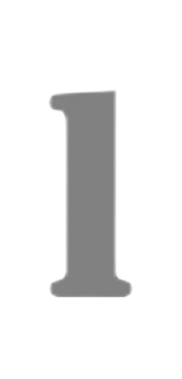
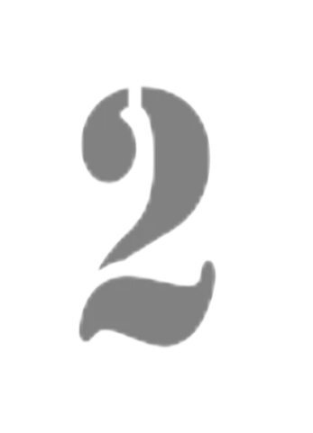
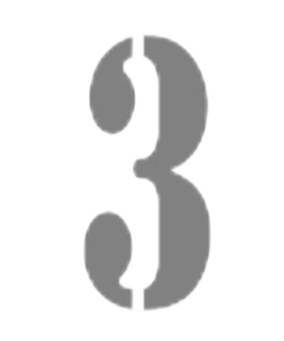

Добро пожаловать на сайт Eco
Knowledge! Здесь вы найдете
полезную информацию о самых
крупных и известных компаниях в
мире, их истории, продуктах и
услугах, а также о технологиях,
которые они используют.
Наши миссии:
Мы стремимся
информировать
пользователей о
продуктах и услугах,
которые предлагают
большие компании, о их
социальной
ответственности и
экологических
инициативах.
Мы заботимся о
том, чтобы на
нашем сайте было
представлено
объективное и
актуальное содержание,
основанное на
доствоерных источниках
информации.
Мы верим, что
наш сайт будет
особенно полезен для студентов,
предпринимателей,
ученых и всех, кто
интересуется
современными
тенденциями во всем
мире.
Яндекс
Это компания-технологический гигант, основанная в 1997 году в России. Яндекс предоставляет ряд онлайн-сервисов и продуктов, таких как поисковая система, почта, музыкальный и видеостриминг, карта и навигация, онлайн-реклама и другие. Компания также занимается различными разработками в сфере искусственного интеллекта, автономных и беспилотных транспортных средств, финансовых сервисов и облака.
Лукойл
Это крупнейшая нефтяная компания в России и один из крупнейших промышленных конгломератов в мире, основанная в 1991 году. ЛУКОЙЛ занимается добычей, переработкой и производством нефти, газа, нефтепродуктов, пищевых продуктов и других товаров. Компания имеет множество месторождений нефти и газа, находящихся в разных регионах России, а также зарубежных странах.
ФосАгро
Это крупнейшая в России и одна из крупнейших в мире компаний по производству и продаже минеральных удобрений. Компания основана в 2001 году и базируется в городе Череповец. Она имеет широкий ассортимент продукции, включая такие удобрения, как аммонийные и мочевинные удобрения, фосфатные удобрения, азотные и калийные удобрения, а также различные химические продукты для различных отраслей промышленности.
Cеверсталь
Это одна из крупнейших компаний в России, входящая в число лидеров рынка металлургии. Компания была основана в 1955 году, а главный офис находится в Череповце.Северсталь осуществляет производство и продажу широкого ассортимента стальных продуктов, включая прокат, листовую сталь, трубы и другие изделия. Кроме того, компания занимается добычей и производством угля, железной руды и других ресурсов, необходимых для производства стали.